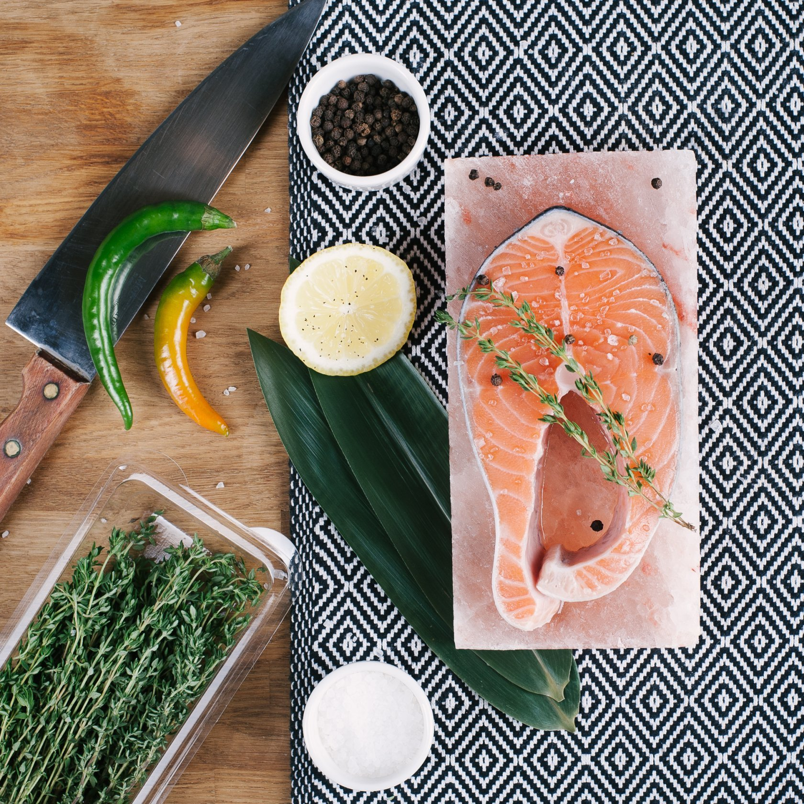
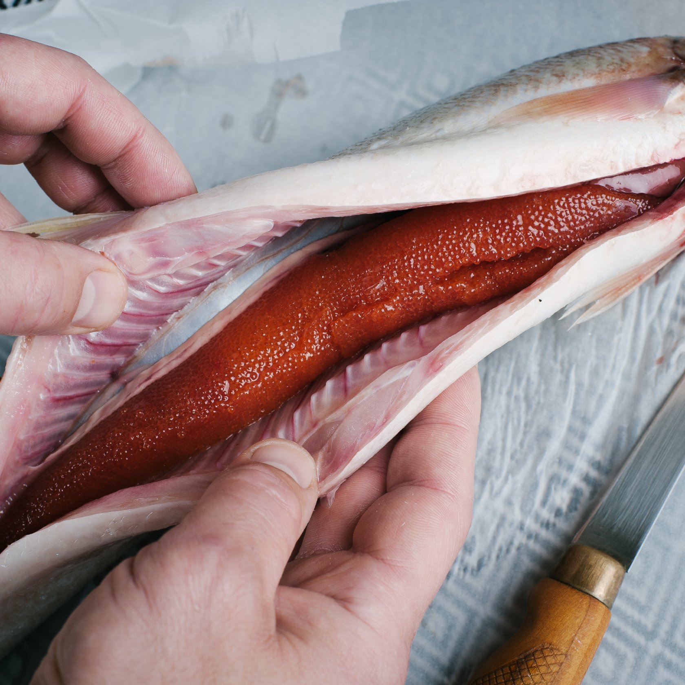
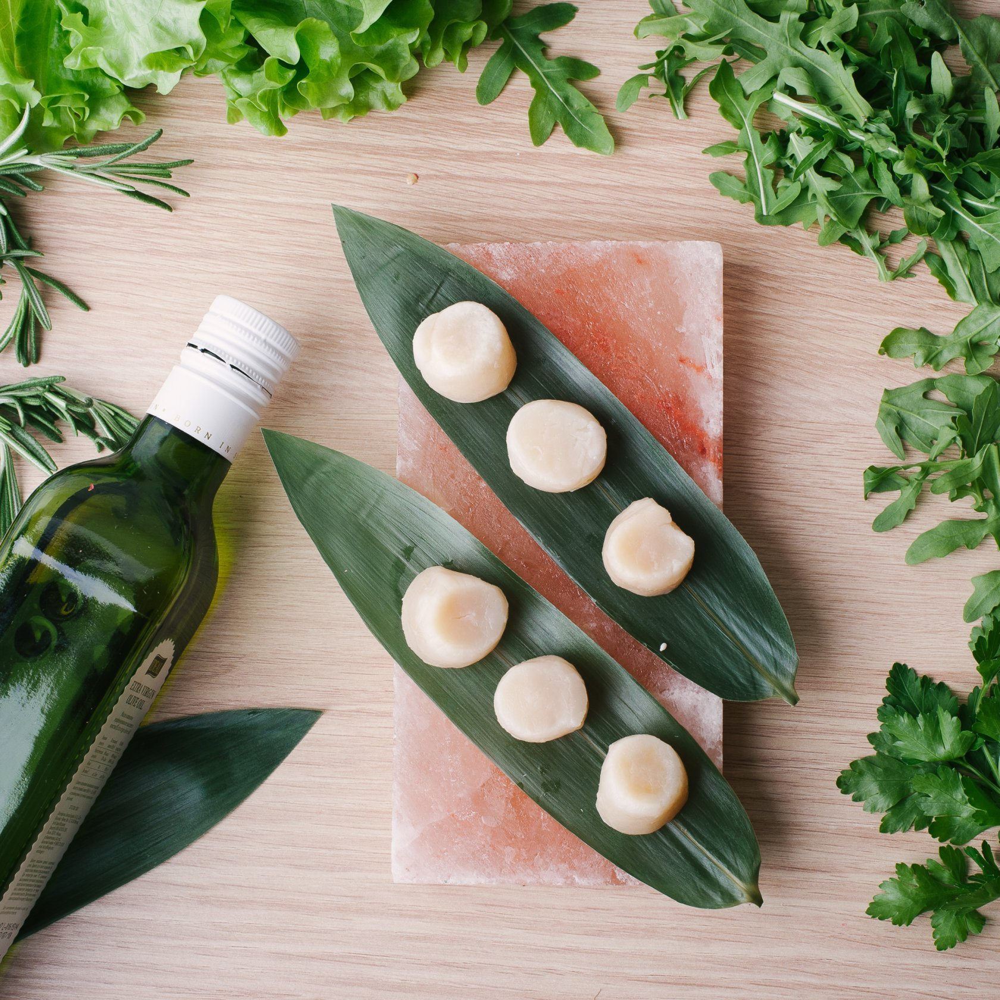
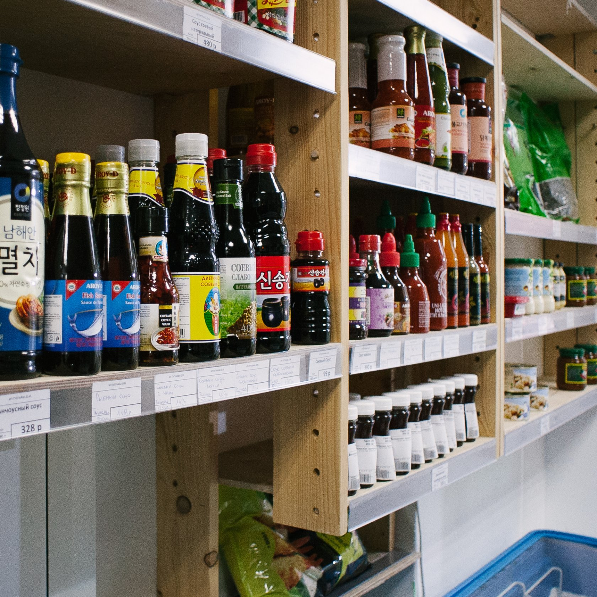
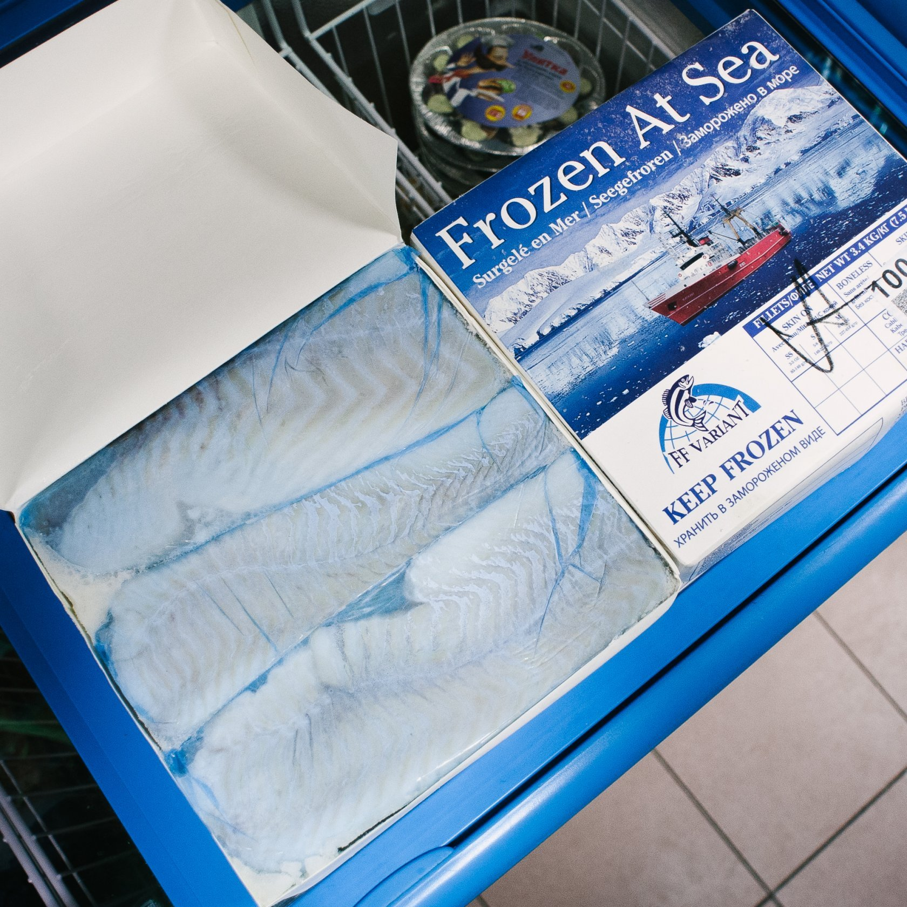
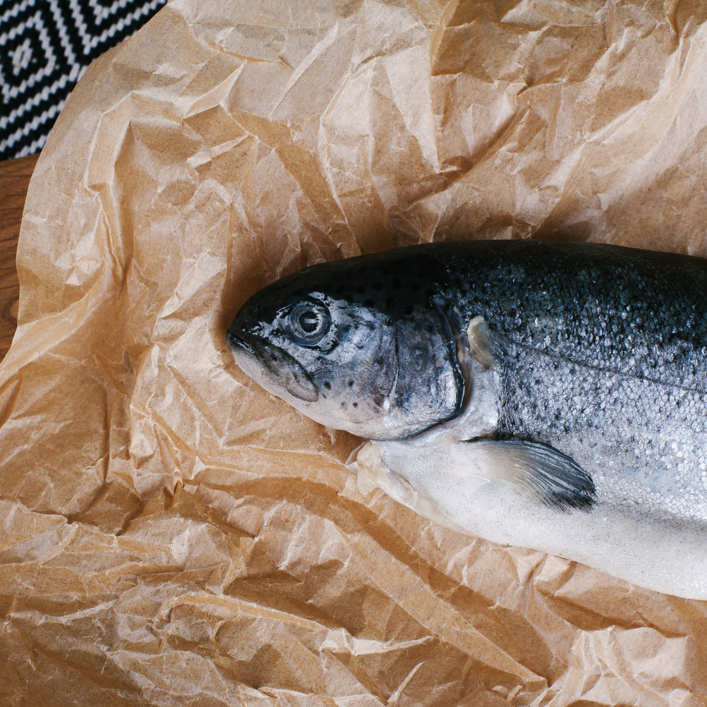
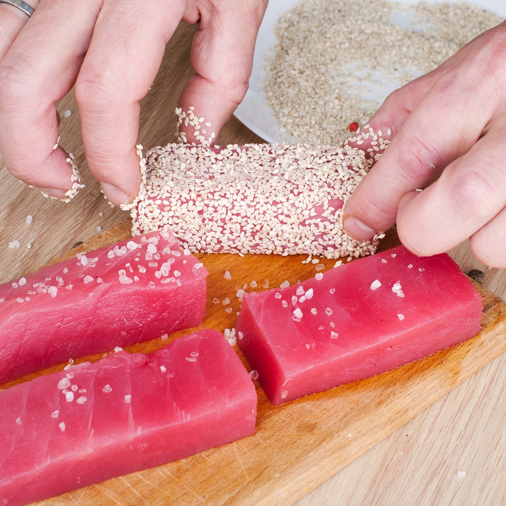

Чёрная икра
6 000 ₽/0,05 кгОсетровая, забойная, высшего качества
Адрес магазина: ул. Строителей, д. 7, корп. 1 (метро «Вавиловская», метро «Университет»)
Качественная рыба на каждый день, морепродукты и рыбные деликатесы в Москве!
Заказать в ТелеграмеКачественная рыба на каждый день, морепродукты
и рыбные деликатесы в Москве



«Рыбная лавка капитана Селедкина» — небольшой магазин в нескольких минутах ходьбы от метро «Вавиловская».
Казалось бы, обычная торговая точка, но нас уже знают не только жители окрестных домов — к нам приезжают из других районов Москвы, а потом благодарят у себя в блогах.
Кроме рыбы, мы продаём чёрную, красную, икру сига, щуки и морского ежа. Только заводская икра, замороженная без консерванта, или с «человеческим» консервантом — сорбатом калия.




Во-первых, это качество. Мы изучаем предложения поставщиков и выбираем только рыбу свежего завоза и не вымороженную. Мы закупаем рыбу, быстро замороженную после поимки прямо на промысле и ни разу с тех пор не размораживавшуюся: покупатель разморозит её сам уже дома. В лавке её быстро разбирают, а склада у нас нет, весь наш товар лежит в прилавках-холодильниках. Поэтому рыба не залеживается, мы постоянно подвозим свежемороженую продукцию.
Во-вторых, ассортимент. Хоть магазин и невелик, мы предлагаем и достаточно обычную рыбу для повседневного приготовления, и интересные деликатесы. При этом настоящим деликатесом могут стать и самые простые, казалось бы, виды — например, купленная у нас мороженая сельдь, если посолить её грамотно и правильно.
И это наша третья фирменная фишка — от слова «fish», разумеется. Наши продавцы и консультанты всегда делятся советами — или подскажут, где их прочитать.







Мы убеждены, что вкус блюда определяется не только навыками повара, но и качеством ингредиентов

Владелец «Рыбной лавки капитана Селедкина»
«Когда моя жена была беременна, врач посоветовал есть больше рыбы и морепродуктов. Я прошёлся по местным лавочкам и магазинам и ужаснулся. В Москве нормальную рыбу сложно найти.
Некоторые мороженую рыбу заливают водой — для веса, у других с весом всё „ок“, но неправильно везут либо неправильно замораживают — если продукт и не испорчен, то точно не первого качества. Свою семью я этим кормить не хотел.
Я позвонил знакомому во Владивосток, спросил, можно ли доставить нормальной рыбы. Оказалось, что можно, но относительно большими партиями — нам столько не съесть. Походил по знакомым и соседям — оказалось, что спрос есть, поэтому решили скинуться и взять на всех. Через какое-то время открыл «Лавку капитана Селедкина».
У нас весь бизнес основан на качестве товара и на нормах работы с продуктом. Забудешь, например, заморозку включить — рыба испортится, неправильно примешь от поставщика — старая рыба будет лежать месяцами и портиться. Мы следим за такими вещами, поэтому можем гарантировать хорошую рыбу и морепродукты».
В полном каталоге — весь ассортимент и действующие цены. Наличие конкретной позиции можно уточнить у лавки.
Осетровая, забойная, высшего качества
Форель, кижуч, нерка, кета, горбуша
Камчатка
Магадан
Свежемороженая, Камчатка
Свежемороженая, река Лена и река Яна
Мурманск, судовая заморозка
Чили, глазировка 0%
Пилим сами, глазировка 0%
Пилим сами, глазировка 0%
Солим сами
Без консервантов и созревателей

Телефон: +7 916 675‑14‑52
Адрес лавки: Москва, ул. Строителей, д. 7, корп. 1. Метро «Вавиловская»; «Университет» — дополнительный маршрут.
Время работы:
Ежедневно с 11:00 до 20:00